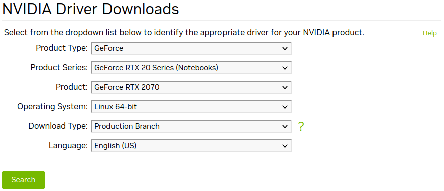
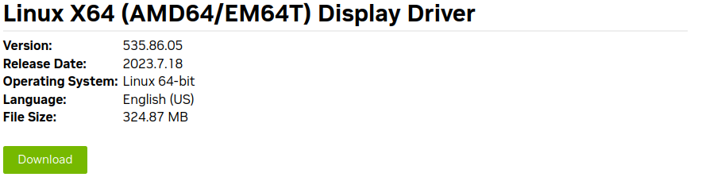
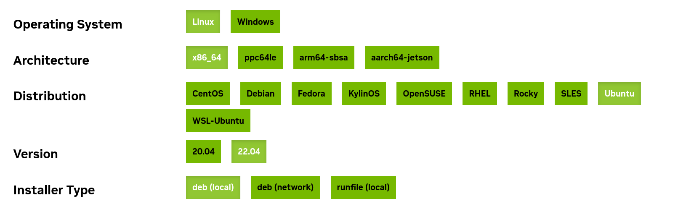

Installing CUDA
Introduction
In this guide, we will lead you through the essential steps to set up a deep learning-based application, which involves installing NVIDIA GPUs, CUDA, and cuDNN. Additionally, we’ll explore how to upgrade your CUDA environment and even demonstrate how to manage multiple CUDA versions on a single machine for maximum flexibility and efficiency.
Preinstall
Let’s perform some pre-installation checks about system, GPU device, its compute capability to ensure that our system meets the necessary requirements:
echo "*** CUDA-capable GPU ***"
lspci | grep -i nvidia
echo "*** GPU compute capability ***"
nvidia-smi --query-gpu=compute_cap --format=csv
echo "*** CUDA cores number ***"
nvidia-settings -q CUDACores -t
echo "*** Linux version ***"
uname -m && cat /etc/*release
echo "*** gcc version ***"
gcc --version | grep "gcc" | awk '{print $4}'
echo "*** Kernel version ***"
uname -r
Check if CUDA Toolkit and NVIDIA driver are already installed we may think of upgrade instead:
echo "*** NVIDIA driver version ***"
nvidia-smi | grep "Driver Version" | awk '{print $6}'
echo "*** CUDA Toolkit version ***"
nvcc --version | grep "release" | awk '{print $6}' | cut -c2-
echo "*** cuDNN version ***"
locate cudnn | grep "libcudnn.so." # | tail -n1 | sed -r 's/^.*\.so\.//'
Install
In order to run a CUDA-based application, the system should have a CUDA enabled GPU and an NVIDIA display driver that is compatible with the CUDA Toolkit (CUDA-enabled GPU + NVIDIA driver + CUDA Toolkit + (cuDNN)) that was used to build the application itself.
NVIDIA graphics driver
Note: if you plan to install CUDA Toolkit later, you can skip this step as CUDA Toolkit includes the necessary drivers.
NVIDIA driver includes the CUDA (driver) library designed for low-level CUDA programming. When linking a CUDA-based program, we typically use the shared library named libcuda.so, and its corresponding header file is called cuda.h.
To install NVIDIA driver, we download the recommended driver .run file for our GPU from NVIDIA Driver Downloads. For example, if we have a GPU GeForce RTX 2070 Mobile, the recommended driver version is 535.86.05.


# e.g. fiel: NVIDIA-Linux-x86_64-535.86.05.run
chmod +x <file.run>
sudo ./<file.run>
Reboot your computer and verify that the NVIDIA graphics driver can be loaded:
nvidia-smi
# +-----------------------------------------------------------------------------+
# | NVIDIA-SMI 535.54.03 Driver Version: 535.54.03 CUDA Version: 12.2 |
# |-------------------------------+----------------------+----------------------+
# | GPU Name Persistence-M| Bus-Id Disp.A | Volatile Uncorr. ECC |
# | Fan Temp Perf Pwr:Usage/Cap| Memory-Usage | GPU-Util Compute M. |
# | | | MIG M. |
# |===============================+======================+======================|
# | 0 NVIDIA GeForce ... Off | 00000000:01:00.0 Off | N/A |
# | N/A 55C P8 7W / N/A | 396MiB / 7982MiB | 13% Default |
# | | | N/A |
# +-------------------------------+----------------------+----------------------+
#
# +-----------------------------------------------------------------------------+
# | Processes: |
# | GPU GI CI PID Type Process name GPU Memory |
# | ID ID Usage |
# |=============================================================================|
# | 0 N/A N/A 5848 G /usr/lib/xorg/Xorg 150MiB |
# | 0 N/A N/A 7386 G /usr/bin/gnome-shell 75MiB |
# | 0 N/A N/A 8099 G /usr/lib/firefox/firefox 168MiB |
# +-----------------------------------------------------------------------------+
sudo find /usr/ -name cuda.h
# /usr/src/linux-headers-5.15.0-78/include/uapi/linux/cuda.h
# /usr/src/linux-headers-5.15.0-78/include/linux/cuda.h
# /usr/src/linux-headers-5.15.0-76/include/uapi/linux/cuda.h
# /usr/src/linux-headers-5.15.0-76/include/linux/cuda.h
# /usr/src/linux-headers-5.4.0-122/include/uapi/linux/cuda.h
# /usr/src/linux-headers-5.4.0-122/include/linux/cuda.h
# /usr/include/linux/cuda.h
# /usr/local/cuda-12.2/targets/x86_64-linux/include/cuda.h
# /usr/local/lib/python3.9/site-packages/torch/include/torch/csrc/api/include/torch/cuda.h
# /usr/local/lib/python3.9/site-packages/triton/third_party/cuda/include/cuda.h
# /usr/local/lib/python3.9/site-packages/nvidia/cuda_runtime/include/cuda.h
# /usr/local/cuda-11.0/targets/x86_64-linux/include/cuda.h
sudo find /usr/ -name libcuda.*
# /usr/lib/x86_64-linux-gnu/libcuda.so.1
# /usr/lib/x86_64-linux-gnu/libcuda.so
# /usr/lib/x86_64-linux-gnu/libcuda.so.535.54.03
# /usr/lib/i386-linux-gnu/libcuda.so.1
# /usr/lib/i386-linux-gnu/libcuda.so
# /usr/lib/i386-linux-gnu/libcuda.so.535.54.03
# /usr/local/cuda-12.2/targets/x86_64-linux/lib/stubs/libcuda.so
# /usr/local/cuda-11.0/targets/x86_64-linux/lib/stubs/libcuda.so
# /usr/local/cuda-11.0/doc/man/man7/libcuda.7
# /usr/local/cuda-11.0/doc/man/man7/libcuda.so.7
It appears that the NVIDIA Driver version is 535.54.03.
CUDA Toolkit (CUDA)
CUDA Runtime library is an essential component of the CUDA Toolkit, specifically designed for high-level CUDA programming. When installing the NVIDIA CUDA Toolkit, the NVIDIA driver will also be automatically installed. To link our CUDA-based program, we typically use the shared library named libcudart.so, and its corresponding header file is cuda_runtime.h.
To install CUDA Toolkit, we choose the appropriate version of CUDA Toolkit to download and install from CUDA Toolkit Archive. For example, we want to choose the latest CUDA Toolkit version which is CUDA Toolkit 12.2.0.

Set up the repository and install CUDA Toolkit using the following cmds:
# Package pinning mechanism: set a specific version of a package to prevent automatic upgrades by the package manager.
wget https://developer.download.nvidia.com/compute/cuda/repos/ubuntu2204/x86_64/cuda-ubuntu2204.pin
sudo mv cuda-ubuntu2204.pin /etc/apt/preferences.d/cuda-repository-pin-600
# Download and add the necessary repository configuration of the CUDA Toolkit deb file for Ubuntu 22.04 (amd64 architecture) with version 12.2.0 to the APT package manager.
wget https://developer.download.nvidia.com/compute/cuda/12.2.0/local_installers/cuda-repo-ubuntu2204-12-2-local_12.2.0-535.54.03-1_amd64.deb
sudo cp /var/cuda-repo-ubuntu2204-12-2-local/cuda-*-keyring.gpg /usr/share/keyrings/
sudo dpkg -i cuda-repo-ubuntu2204-12-2-local_12.2.0-535.54.03-1_amd64.deb
# Update the local package list, ensuring that the system recognizes the newly added CUDA repository and its packages.
sudo apt-get update
# apt search cuda | grep cuda
# sudo apt-get install -s cuda # simulate
sudo apt-get install cuda # default, may be not the version we want
# sudo apt-get install cuda-12-2
We see that installing CUDA Toolkit includes CUDA driver (cuda-drivers), tools for app creation, libraries, header files, and resources. The newer driver is overinstalled on top of the older driver. We can find the CUDA Toolkit and corresponding NVIDIA driver versions here (table 3).
After installation, some useful environment variables are required for CUDA programming on Linux. Add the following lines to your ~/.bashrc file:
echo '
# Set to the root directory of the CUDA installation
export CUDA_HOME="$CUDA_HOME:/usr/local/cuda"
export CUDA_PATH="$CUDA_PATH:/usr/local/cuda"
# Add the CUDA binary path to the existing $PATH
export PATH="$PATH:/usr/local/cuda/bin"
# Add the CUDA library path to the existing $LD_LIBRARY_PATH
export LD_LIBRARY_PATH="$LD_LIBRARY_PATH:/usr/local/cuda/lib64"
# Set it to a comma-separated list of GPU device indices
# export CUDA_VISIBLE_DEVICES=0,1
# Set 1 to disable
# export CUDA_CACHE_DISABLE=1
' >> ~/.bashrc
source ~/.bashrc
Some useful environment variables used in CUDA programming on Linux:
-
CUDA_HOME,CUDA_PATH: helps various CUDA-related tools and compilers locate the necessary libraries and headers. -
PATH: easily access CUDA commands likenvcc(CUDA compiler),cuda-gdb,cuda-memcheck,nvprof,nvprune, etc. -
LD_LIBRARY_PATH: crucial for the dynamic linker to locate shared libraries required by CUDA applications at runtime. -
CUDA_VISIBLE_DEVICES: specify which GPU devices should be used by your CUDA program. -
CUDA_CACHE_DISABLE: disables the CUDA cache, which can be useful for debugging and profiling purposes.
Reboot the computer and verify that the NVIDIA graphics driver can be loaded.
Check if the CUDA Toolkit version has been installed successfully:
nvcc -V
# nvcc: NVIDIA (R) Cuda compiler driver
# Copyright (c) 2005-2023 NVIDIA Corporation
# Built on Tue_Jun_13_19:16:58_PDT_2023
# Cuda compilation tools, release 12.2, V12.2.91
# Build cuda_12.2.r12.2/compiler.32965470_0
sudo find /usr/ -name cuda_runtime.h
# /usr/local/cuda-12.2/targets/x86_64-linux/include/cuda_runtime.h
# /usr/local/lib/python3.9/site-packages/nvidia/cuda_runtime/include/cuda_runtime.h
# /usr/local/cuda-11.0/targets/x86_64-linux/include/cuda_runtime.h
sudo find /usr/ -name libcudart.*
# /usr/local/cuda-12.2/targets/x86_64-linux/lib/libcudart.so.12
# /usr/local/cuda-12.2/targets/x86_64-linux/lib/libcudart.so.12.2.53
# /usr/local/cuda-12.2/targets/x86_64-linux/lib/libcudart.so
# /usr/local/lib/python3.9/site-packages/nvidia/cuda_runtime/lib/libcudart.so.11.0
# /usr/local/cuda-11.0/targets/x86_64-linux/lib/libcudart.so.11.0.221
# /usr/local/cuda-11.0/targets/x86_64-linux/lib/libcudart.so
# /usr/local/cuda-11.0/targets/x86_64-linux/lib/libcudart.so.11.0
# /usr/local/cuda-11.0/doc/man/man7/libcudart.7
# /usr/local/cuda-11.0/doc/man/man7/libcudart.so.7
It appears that the CUDA Toolkit version is 12.2.
cuDNN
CuDNN (CUDA Deep Neural Network Library), developed by NVIDIA, is a GPU-accelerated library specifically designed to enhance deep learning training and inference on NVIDIA GPUs.
Based on Installing cuDNN on Linux, we download the cuDNN .tar file corresponding to the CUDA Toolkit version from cuDNN Archive.
# cudnn-linux-x86_4-8.9.2.26_cuda12-archive.tar.xz
cd Downloads/
tar -zxvf <file.tar>
mv cuda/ cudaX.Y
sudo cp cudaX.Y/include/* /usr/local/cuda-X.Y/include/
sudo cp cudaX.Y/lib64/* /usr/local/cuda-X.Y/lib64/
sudo chmod a+r /usr/local/cuda/lib64/libcudnn*
Check the installed cuDNN version if successful:
locate cudnn | grep "libcudnn.so."
find /usr/ -name libcudnn*
cat /usr/local/cuda/include/cudnn.h | grep CUDNN_MAJOR -A 2
cat /usr/local/cuda/include/cudnn_version.h | grep CUDNN_MAJOR -A 2 # for recent version
Upgrade
When upgrading the CUDA Toolkit, it is essential to ensure that the NVIDIA driver meets the minimum requirements of the targeted CUDA Toolkit version. We can find the necessary information about the compatible driver versions for each CUDA Toolkit in the CUDA Toolkit and Corresponding Driver Versions (table 3).
As explained in the CUDA Compatibility, CUDA upgrades are only backward compatible and not forward compatible. This means that applications or libraries compiled with an API from a newer CUDA/ NVIDIA driver version may not function correctly if you are using an environment with an older CUDA/ NVIDIA driver version. On the other hand, applications compiled with an API from an older version will work correctly if a newer version is installed.
For example, consider the following example: A CUDA application compiled with CUDA 9.2 and a corresponding NVIDIA driver 396.37 may not work when executed on a system with CUDA 8.0 and NVIDIA driver version 367.48 due to the forward incompatibility. However, running an application compiled with CUDA 8.0 and NVIDIA driver 367.48 on a system with CUDA 9.2 and NVIDIA driver 396.37 will still function properly because of backward compatibility.
To upgrade cuDNN, you can refer to the installation guide here.
Uninstall
Removing CUDA Toolkit, NVIDIA driver and other tools:
sudo apt-get --purge remove "*cuda*"
sudo apt-get --purge remove "*nvidia*"
sudo apt-get --purge remove "*cublas*" "*cufft*" "*cufile*" "*curand*" "*cusolver*" "*cusparse*" "*gds-tools*" "*npp*" "*nvjpeg*" "nsight*"
sudo apt-get autoremove
sudo rm -rf /var/cuda-repo-X.Y.../
sudo rm -rf /usr/local/cuda-X.Y/
Multi CUDA version on one machine
Switch cuda by create a symbolic link into /usr/local/cuda
sudo ln -s cuda-X.Y cuda
ls -l /usr/local # see cuda folder ref to cuda-X.Y
Conclusion
By the end of this guide, we will have a comprehensive understanding of NVIDIA GPUs, CUDA, and cuDNN, and you’ll be well-prepared to utilize GPU-accelerated computing for various applications. We provide references to official NVIDIA documentation for further exploration.
References
- NVIDIA CUDA ToolKit X.Y Installation Guide for Linux: docs.nvidia.com/cuda/archive/X.Y/cuda-installation-guide-linux/index.html
- CUDA Toolkit and corresponding driver versions (table 3): docs.nvidia.com/cuda/cuda-toolkit-release-notes/index.html#id5
- NVIDIA Driver Downloads: nvidia.com/Download/index.aspx?lang=en-us
- CUDA Toolkit Archive: developer.nvidia.com/cuda-toolkit-archive
- cuDNN Archive: developer.nvidia.com/rdp/cudnn-archive
- Installing cuDNN on Linux docs.nvidia.com/deeplearning/cudnn/install-guide/index.html#install-linux
- CUDA Compatibility: docs.nvidia.com/deploy/cuda-compatibility/index.html
Glossary
Compute capability
The compute capability of a GPU (also known as its SM version (SM: *Streaming multiprocessors)) determines its general specifications and available features. Programs use this number at runtime to determine the available hardware features on the GPU.
We can check NVIDIA GPU’s compute capability here or by running this cmd:
# older cuda toolkit may not suport this feature
nvidia-smi --query-gpu=compute_cap --format=csv
Compute capability of a GPU is represented by a version number X.Y (!= CUDA version) that indicates the supported features and instructions of the GPU hardware. GPUs sharing the same major revision number X in their compute capability have the same core architecture. For example, a GPU with a compute capability starting with 7.Y is based on the Volta architecture, 8.Y indicates the Ampere architecture, and so forth. Minor version numbers Y represent incremental improvements to the base architecture. For instance, Turing is assigned a compute capability of 7.5 as it is an incremental update to the Volta architecture. For deep learning-based purpose, you need to make sure that the compute capability of the GPU is at least 3.0 (Kepler architecture).
Check out Feature Support per Compute Capability (table 14) and Technical Specifications per Compute Capability (table 15) to see if a specific GPU is support for a specific feacture or not.
List NVIDIA GPUs architecture Compute Capability:
- Tesla (2006), CC:
1.Y - Fermi (2010), CC:
2.Y - Kepler (2012), CC:
3.Y - Maxwell (2014), CC:
5.Y - Pascal (2016), CC:
6.Y - Volta (2018), CC:
7.Y. Turing (late 2018), based on the Volta architecture, CC:7.5 - Ampere (2020), CC:
8.Y - Hopper (2022), CC:
9.Y
Appendix
Errors
When cuda is false CUDA unavailable when pytorch 1.3.0, installed with cudatoolkit 10.1 Ref: https://github.com/pytorch/pytorch/issues/28321
pip install torch==1.3.1+cu100 torchvision==0.4.2+cu100 -f https://download.pytorch.org/whl/torch_stable.html
If unable to locate nvidia-410 –> system setting –> soft and update –> choose the best serveur –> retry
Failed call to cuInit: CUDA_ERROR_UNKNOWN
sudo apt-get install nvidia-modprobe
reboot
If get error: E: Failed to fetch file: /var/cuda-repo-ubuntu1604-11-2-local/
sudo rm /etc/apt/sources.list.d/cuda-ubuntu1604-11-2-local.list
If cuDNN existing errors: The driver relies on an automatically generated xorg.conf file at /etc/X11/xorg.conf. If a custom-built xorg.conf file is present, this functionality will be disabled and the driver may not work. You can try removing the existing xorg.conf file, or adding the contents of /etc/X11/xorg.conf.d/00-nvidia.conf to the xorg.conf file. The xorg.conf file will most likely need manual tweaking for systems with a non-trivial GPU configuration.
Successful configs
- GeForce GTX 1080 Ti/PCIe/SSE2: python3.6, Pytorch 1.0.2, cuda 10.0, driver nvidia-410, cudnn 7.4.2
Enjoy Reading This Article?
Here are some more articles you might like to read next: